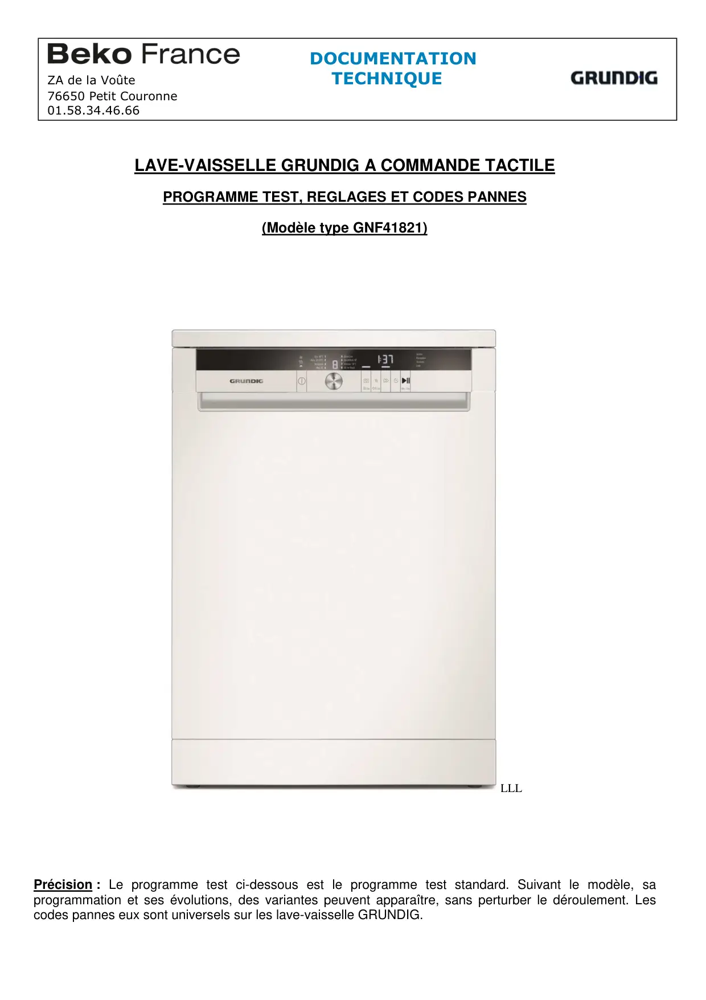
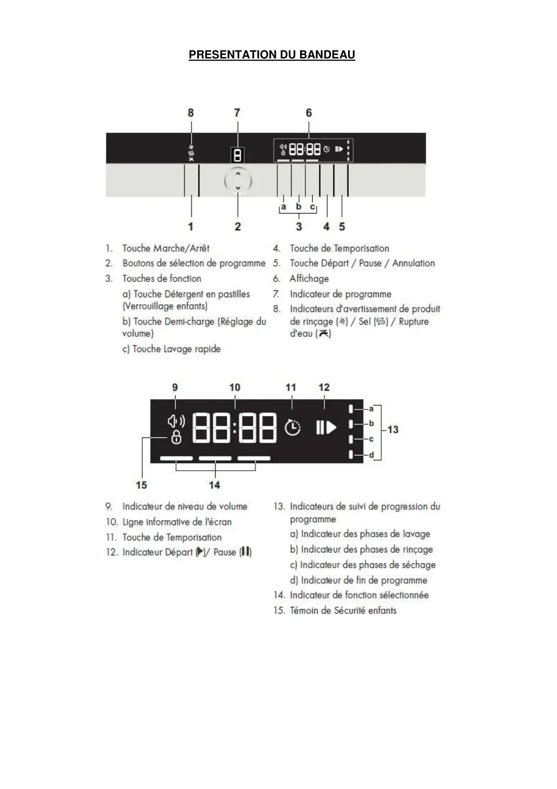
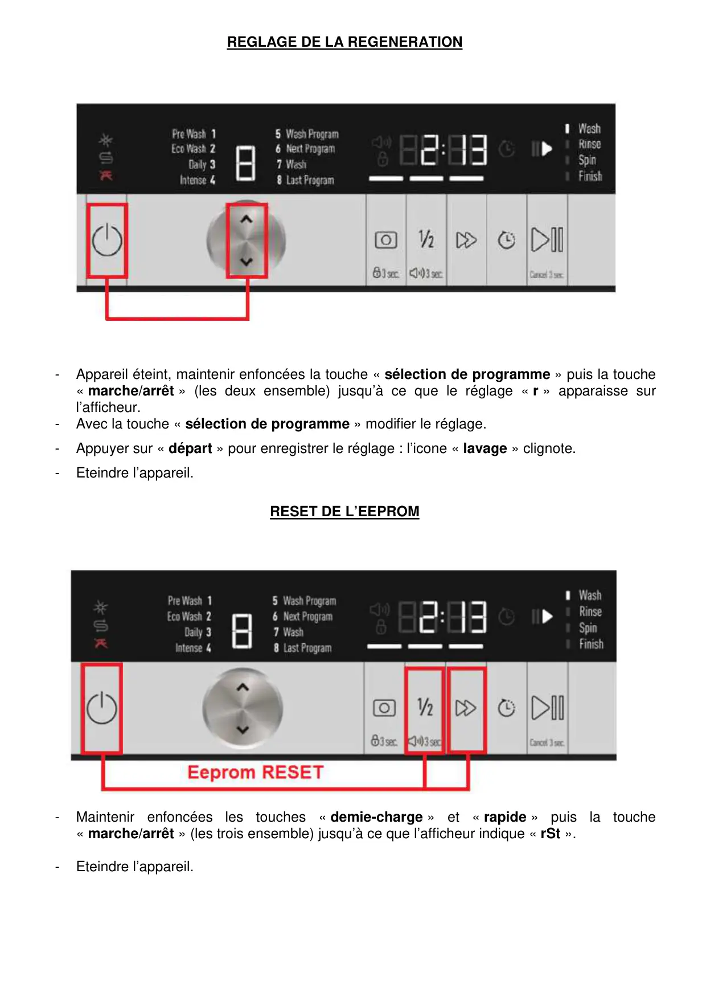
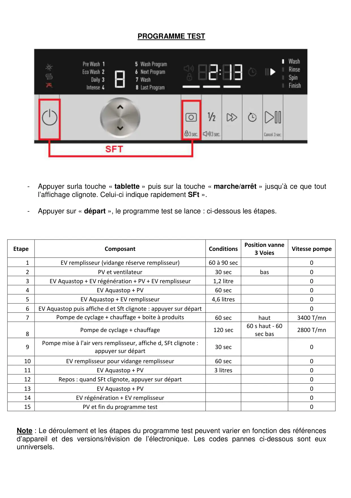
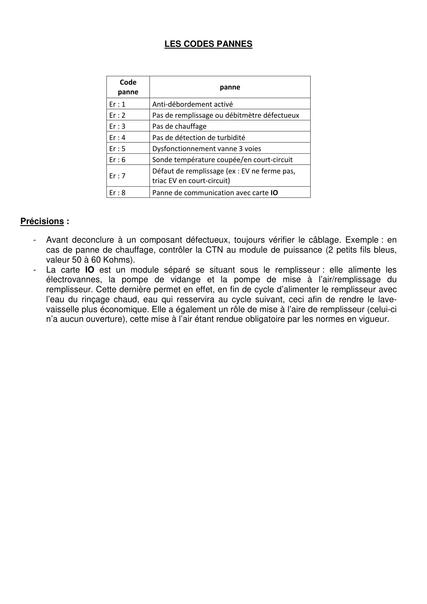

ProgrTest RéglagesLV GRUNDIG

LAVE-VAISSELLE GRUNDIG A COMMANDE TACTILEPROGRAMME TEST, REGLAGES ET CODES PANNES(Modèle type GNF41821)LLLPrécision : Le programme test ci-dessous est le programme test standard. Suivant le modèle, saprogrammation et ses évolutions, des variantes peuvent apparaître, sans perturber le déroulement. Lescodes pannes eux sont universels sur les lave-vaisselle GRUNDIG.DOCUMENTATIONZA de la Voûte TECHNIQUE76650 Petit Couronne01.58.34.46.66
1 / 5
PRESENTATION DU BANDEAU
2 / 5
REGLAGE DE LA REGENERATION-Appareil éteint, maintenir enfoncées la touche « sélection de programme » puis la touche« marche/arrêt » (les deux ensemble) jusqu’à ce que le réglage « r » apparaisse surl’afficheur.-Avec la touche « sélection de programme » modifier le réglage.-Appuyer sur « départ » pour enregistrer le réglage : l’icone « lavage » clignote.-Eteindre l’appareil.RESET DE L’EEPROM-Maintenir enfoncées les touches « demie-charge » et « rapide » puis la touche« marche/arrêt » (les trois ensemble) jusqu’à ce que l’afficheur indique « rSt ».-Eteindre l’appareil.
3 / 5
PROGRAMME TEST-Appuyer surla touche « tablette » puis sur la touche « marche/arrêt » jusqu’à ce que toutl’affichage clignote. Celui-ci indique rapidement SFt ».-Appuyer sur « départ », le programme test se lance : ci-dessous les étapes.EtapeComposantConditionsPosition vanne3 VoiesVitesse pompe1EV remplisseur (vidange réserve remplisseur)60 à 90 sec02PV et ventilateur30 secbas03EV Aquastop + EV régénération + PV + EV remplisseur1,2 litre04EV Aquastop + PV60 sec05EV Aquastop + EV remplisseur4,6 litres06EV Aquastop puis affiche d et Sft clignote : appuyer sur départ07Pompe de cyclage + chauffage + boite à produits60 sechaut3400 T/mn8Pompe de cyclage + chauffage120 sec60 s haut - 60sec bas2800 T/mn9Pompe mise à l'air vers remplisseur, affiche d, SFt clignote :appuyer sur départ30 sec010EV remplisseur pour vidange remplisseur60 sec011EV Aquastop + PV3 litres012Repos : quand SFt clignote, appuyer sur départ013EV Aquastop + PV014EV régénération + EV remplisseur015PV et fin du programme test0Note : Le déroulement et les étapes du programme test peuvent varier en fonction des référencesd’appareil et des versions/révision de l’électronique. Les codes pannes ci-dessous sont euxunniversels.
4 / 5
LES CODES PANNESCodepannepanneEr : 1Anti-débordement activéEr : 2Pas de remplissage ou débitmètre défectueuxEr : 3Pas de chauffageEr : 4Pas de détection de turbiditéEr : 5Dysfonctionnement vanne 3 voiesEr : 6Sonde température coupée/en court-circuitEr : 7Défaut de remplissage (ex : EV ne ferme pas,triac EV en court-circuit)Er : 8Panne de communication avec carte IOPrécisions :-Avant deconclure à un composant défectueux, toujours vérifier le câblage. Exemple : encas de panne de chauffage, contrôler la CTN au module de puissance (2 petits fils bleus,valeur 50 à 60 Kohms).-La carte IO est un module séparé se situant sous le remplisseur : elle alimente lesélectrovannes, la pompe de vidange et la pompe de mise à l’air/remplissage duremplisseur. Cette dernière permet en effet, en fin de cycle d’alimenter le remplisseur avecl’eau du rinçage chaud, eau qui resservira au cycle suivant, ceci afin de rendre le lave-vaisselle plus économique. Elle a également un rôle de mise à l’aire de remplisseur (celui-cin’a aucun ouverture), cette mise à l’air étant rendue obligatoire par les normes en vigueur.
5 / 5